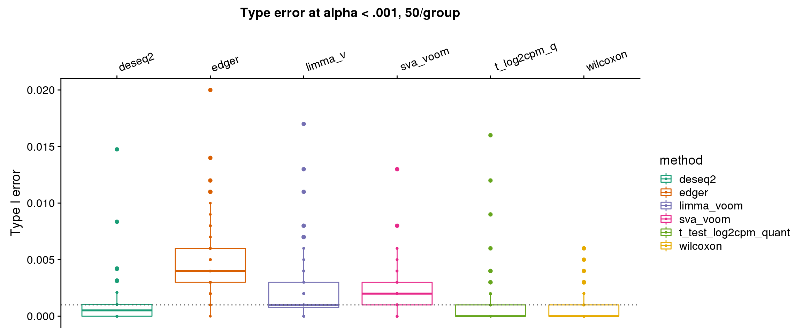
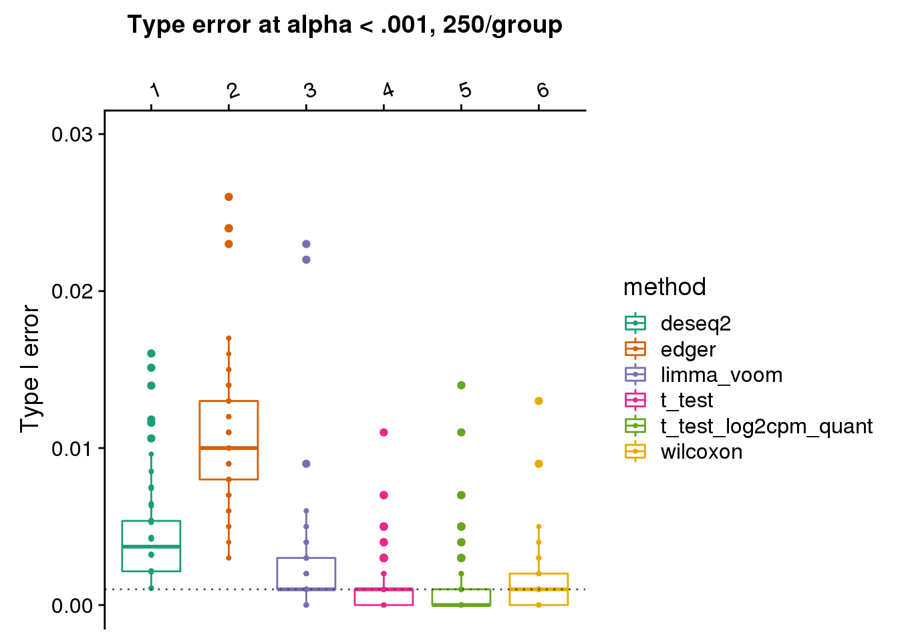
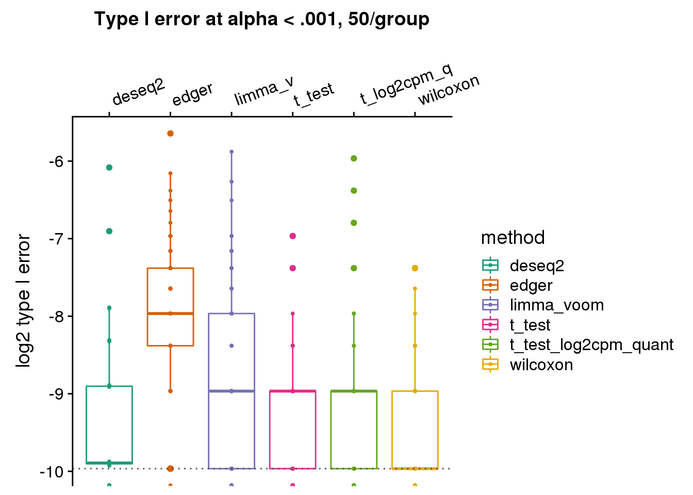
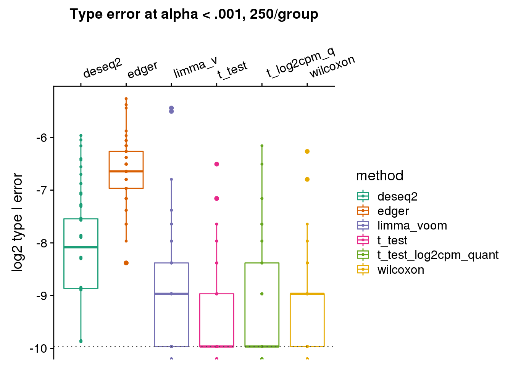
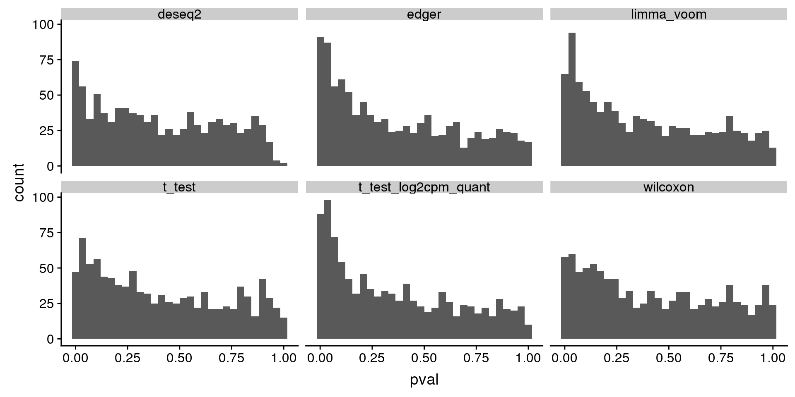
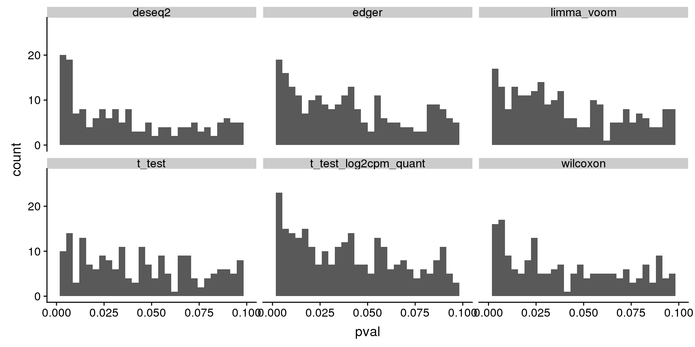

Last updated: 2019-04-30
Checks: 5 1
Knit directory: dsc-log-fold-change/
This reproducible R Markdown analysis was created with workflowr (version 1.3.0). The Checks tab describes the reproducibility checks that were applied when the results were created. The Past versions tab lists the development history.
The R Markdown file has unstaged changes. To know which version of the R Markdown file created these results, you’ll want to first commit it to the Git repo. If you’re still working on the analysis, you can ignore this warning. When you’re finished, you can run wflow_publish to commit the R Markdown file and build the HTML.
Great job! The global environment was empty. Objects defined in the global environment can affect the analysis in your R Markdown file in unknown ways. For reproduciblity it’s best to always run the code in an empty environment.
The command set.seed(20181115) was run prior to running the code in the R Markdown file. Setting a seed ensures that any results that rely on randomness, e.g. subsampling or permutations, are reproducible.
Great job! Recording the operating system, R version, and package versions is critical for reproducibility.
Nice! There were no cached chunks for this analysis, so you can be confident that you successfully produced the results during this run.
Great! You are using Git for version control. Tracking code development and connecting the code version to the results is critical for reproducibility. The version displayed above was the version of the Git repository at the time these results were generated.
Note that you need to be careful to ensure that all relevant files for the analysis have been committed to Git prior to generating the results (you can use wflow_publish or wflow_git_commit). workflowr only checks the R Markdown file, but you know if there are other scripts or data files that it depends on. Below is the status of the Git repository when the results were generated:
Ignored files:
Ignored: .Rhistory
Ignored: .Rproj.user/
Ignored: .sos/
Ignored: analysis/.sos/
Ignored: analysis/figure/
Ignored: dsc/.sos/
Ignored: dsc/benchmark/
Ignored: dsc/dsc_test/.sos/
Ignored: output/
Untracked files:
Untracked: analysis/eval_initial_type1_libsize.Rmd
Untracked: analysis/gtex_power.Rmd
Untracked: analysis/gtex_type1.Rmd
Unstaged changes:
Modified: analysis/eval_initial_type1.Rmd
Modified: analysis/index.Rmd
Modified: dsc/benchmark.dsc
Modified: dsc/benchmark.sh
Modified: dsc/modules/edger.R
Note that any generated files, e.g. HTML, png, CSS, etc., are not included in this status report because it is ok for generated content to have uncommitted changes.
These are the previous versions of the R Markdown and HTML files. If you’ve configured a remote Git repository (see ?wflow_git_remote), click on the hyperlinks in the table below to view them.
| File | Version | Author | Date | Message |
|---|---|---|---|---|
| Rmd | 47ef39a | Joyce Hsiao | 2019-04-30 | add histogram of unadjusted p-value |
| html | 7a49566 | Joyce Hsiao | 2019-04-30 | Build site. |
| Rmd | 36f9e9c | Joyce Hsiao | 2019-04-30 | log mean instead of mean log |
| html | 7a49109 | Joyce Hsiao | 2019-04-29 | Build site. |
| Rmd | 7cf6ace | Joyce Hsiao | 2019-04-29 | mean of log to log of mean |
| html | ec7a7c6 | Joyce Hsiao | 2019-04-29 | Build site. |
| Rmd | c422a07 | Joyce Hsiao | 2019-04-29 | overlay median and mean of type I error |
| html | ffdcfcc | Joyce Hsiao | 2019-04-29 | Build site. |
| Rmd | 78479d7 | Joyce Hsiao | 2019-04-29 | change fig size |
| html | 2b9140e | Joyce Hsiao | 2019-04-29 | Build site. |
| Rmd | 3128918 | Joyce Hsiao | 2019-04-29 | add log2 type I error |
| html | 5514b7c | Joyce Hsiao | 2019-04-23 | Build site. |
| Rmd | dac3c5c | Joyce Hsiao | 2019-04-23 | initial type I error eval results |
Evaluate type I error of some DE methods for data with potential confounded design
Assume equal library size for all samples
Experimental data: PBMC of 2,683 samples and ~ 11,000 genes, including 7+ cell types. This data has large number of zeros (93% zeros in the count matrix).
knitr::opts_chunk$set(warning=F, message=F)
library(dscrutils)
library(tidyverse)── Attaching packages ─────────────────────────────────────────────────────── tidyverse 1.2.1 ──✔ ggplot2 3.1.0 ✔ purrr 0.3.2
✔ tibble 2.1.1 ✔ dplyr 0.8.0.1
✔ tidyr 0.8.3 ✔ stringr 1.3.1
✔ readr 1.3.1 ✔ forcats 0.3.0 ── Conflicts ────────────────────────────────────────────────────────── tidyverse_conflicts() ──
✖ dplyr::filter() masks stats::filter()
✖ dplyr::lag() masks stats::lag()extract dsc output and get p-values, q-values, true signals, etc.
dir_dsc <- "/scratch/midway2/joycehsiao/dsc-log-fold-change/pipe_gtex"
dsc_res <- dscquery(dir_dsc,
targets=c("data_poisthin_null",
"data_poisthin_null.seed",
"data_poisthin_null.n1",
"method", "pval_rank"),
ignore.missing.file = T)
method_vec <- as.factor(dsc_res$method)
n_methods <- nlevels(method_vec)
res <- vector("list",n_methods)
for (i in 1:nrow(dsc_res)) {
# print(i)
fl_pval <- readRDS(file.path(dir_dsc,
paste0(as.character(dsc_res$method.output.file[i]), ".rds")))
# fl_beta <- readRDS(file.path(dir_dsc,
# paste0(as.character(dsc_res$data_poisthin_null.output.file[i]), ".rds")))
seed <- dsc_res$data_poisthin_null.seed[i]
n1 <- dsc_res$data_poisthin_null.n1[i]
# fl_qval <- readRDS(file.path(dir_dsc,
# paste0(as.character(dsc_res$pval_rank.output.file[i]), ".rds")))
res[[i]] <- data.frame(method = as.character(dsc_res$method)[i],
seed = seed,
n1=n1,
pval = fl_pval$pval,
stringsAsFactors = F)
}
res_merge <- do.call(rbind, res)
saveRDS(res_merge, file = "output/eval_initial_type1.Rmd/res_merge.rds")res_merge <- readRDS(file = "output/eval_initial_type1.Rmd/res_merge.rds")
make_plots <- function(res, alpha, labels,
args=list(n1, labels)) {
n_methods <- length(unique(res$method))
cols <- RColorBrewer::brewer.pal(n_methods,name="Dark2")
res %>% filter(n1==args$n1) %>%
group_by(method, seed) %>%
summarise(type1=mean(pval<alpha, na.rm=T), nvalid=sum(!is.na(pval))) %>%
# group_by(method) %>%
# summarise(mn=mean(type1, na.rm=T),
# n=sum(!is.na(type1)), se=sd(type1, na.rm=T)/sqrt(n)) %>%
ggplot(., aes(x=method, y=type1, col=method)) +
# geom_errorbar(aes(ymin=mn+se, ymax=mn-se), width=.3) +
geom_boxplot() + geom_point(size=.7) + xlab("") +
ylab("Type I error") +
scale_x_discrete(position = "top",
labels=args$labels) +
scale_color_manual(values=cols) +
theme(axis.text.x=element_text(angle = 20, vjust = -.3, hjust=-.1))
}
library(cowplot)
levels(factor(res_merge$method))[1] "deseq2" "edger" "limma_voom"
[4] "t_test" "t_test_log2cpm_quant" "wilcoxon" p1 <- make_plots(res_merge, alpha=.001,
args=list(n1=50, labels=labels)) +
ggtitle("Type error at alpha < .001, 50/group") + ylim(0,.025) +
geom_hline(yintercept=.001, col="gray30", lty=3) +
stat_summary(fun.y=median, geom="point", shape=18, size=6, col="black") +
stat_summary(fun.y=mean, geom="point", shape=4, size=4, col="black")
p1
# # excluded edger
# labels <- c("deseq2", "limma_v", "t_test", "t_log2cpm_q", "wilcoxon")
# p1 <- make_plots(subset(res_merge, method!="edger"), alpha=.001,
# args=list(n1=50, labels=labels)) +
# ggtitle("Type error at alpha < .001, 50/group") + ylim(0,.02) +
# geom_hline(yintercept=.001, col="gray30", lty=3)
# p1
p2 <- make_plots(res_merge, alpha=.001,
args=list(n1=250, labels=labels)) +
ggtitle("Type error at alpha < .001, 250/group") + ylim(0,.03) +
geom_hline(yintercept=.001, col="gray30", lty=3) +
stat_summary(fun.y=median, geom="point", shape=18, size=6, col="black") +
stat_summary(fun.y=mean, geom="point", shape=4, size=4, col="black")
p2
log2 scale
make_plots_log2 <- function(res, alpha, labels,
args=list(n1, labels)) {
n_methods <- length(unique(res$method))
cols <- RColorBrewer::brewer.pal(n_methods,name="Dark2")
res_plot <- res %>% filter(n1==args$n1) %>%
group_by(method, seed) %>%
summarise(type1=mean(pval<alpha, na.rm=T), nvalid=sum(!is.na(pval)))
res_plot_mn <- res_plot %>% group_by(method) %>%
summarise(mn=mean(type1, na.rm=T),
med=median(type1, na.rm=T))
# summarise(mn=mean(type1, na.rm=T),
# n=sum(!is.na(type1)), se=sd(type1, na.rm=T)/sqrt(n)) %>%
ggplot(data=res_plot, aes(x=method, y=log2(type1), col=method)) +
# geom_errorbar(aes(ymin=mn+se, ymax=mn-se), width=.3) +
geom_boxplot() + geom_point(size=.7) + xlab("") +
scale_x_discrete(position = "top",
labels=args$labels) +
scale_color_manual(values=cols) +
theme(axis.text.x=element_text(angle = 20, vjust = -.3, hjust=-.1)) +
geom_point(data=res_plot_mn,
aes(x=method, y=log2(mn)), shape=4, size=4, col="black") +
geom_point(data=res_plot_mn,
aes(x=method, y=log2(med)), shape=18, size=6, col="black")
}
library(cowplot)
levels(factor(res_merge$method))[1] "deseq2" "edger" "limma_voom"
[4] "t_test" "t_test_log2cpm_quant" "wilcoxon" labels <- c("deseq2", "edger", "limma_v", "t_test", "t_log2cpm_q", "wilcoxon")
p1 <- make_plots_log2(res_merge, alpha=.001,
args=list(n1=50, labels=labels)) +
ggtitle("Type I error at alpha < .001, 50/group") + #ylim(0,.03) +
geom_hline(yintercept=log2(.001), col="gray30", lty=3) +
ylab("log2 type I error")
p1
p2 <- make_plots_log2(res_merge, alpha=.001,
args=list(n1=250, labels=labels)) +
ggtitle("Type error at alpha < .001, 250/group") +
geom_hline(yintercept=log2(.001), col="gray30", lty=3) +
ylab("log2 type I error")
p2
histogram of unadjusted p-value of one dataset
tmp <- subset(res_merge, n1==50) %>%
group_by(seed, method) %>%
summarise(type1=mean(pval < .001, na.rm=T))
tmp[which.max(tmp$type1),]# A tibble: 1 x 3
# Groups: seed [1]
seed method type1
<int> <chr> <dbl>
1 90 edger 0.02tmp[tmp$seed==90,]# A tibble: 6 x 3
# Groups: seed [1]
seed method type1
<int> <chr> <dbl>
1 90 deseq2 0.0148
2 90 edger 0.02
3 90 limma_voom 0.007
4 90 t_test 0.001
5 90 t_test_log2cpm_quant 0.012
6 90 wilcoxon 0.002 subset(res_merge, n1==50 & seed==90) %>%
ggplot(., aes(x=pval)) +
geom_histogram(bins=30) +
facet_wrap(~method)
subset(res_merge, n1==50 & seed==90) %>%
ggplot(., aes(x=pval)) +
geom_histogram(bins=30) +
facet_wrap(~method) + xlim(0, .1)
sessionInfo()R version 3.5.1 (2018-07-02)
Platform: x86_64-pc-linux-gnu (64-bit)
Running under: Scientific Linux 7.4 (Nitrogen)
Matrix products: default
BLAS/LAPACK: /software/openblas-0.2.19-el7-x86_64/lib/libopenblas_haswellp-r0.2.19.so
locale:
[1] LC_CTYPE=en_US.UTF-8 LC_NUMERIC=C
[3] LC_TIME=en_US.UTF-8 LC_COLLATE=en_US.UTF-8
[5] LC_MONETARY=en_US.UTF-8 LC_MESSAGES=en_US.UTF-8
[7] LC_PAPER=en_US.UTF-8 LC_NAME=C
[9] LC_ADDRESS=C LC_TELEPHONE=C
[11] LC_MEASUREMENT=en_US.UTF-8 LC_IDENTIFICATION=C
attached base packages:
[1] stats graphics grDevices utils datasets methods base
other attached packages:
[1] cowplot_0.9.4 forcats_0.3.0 stringr_1.3.1 dplyr_0.8.0.1
[5] purrr_0.3.2 readr_1.3.1 tidyr_0.8.3 tibble_2.1.1
[9] ggplot2_3.1.0 tidyverse_1.2.1 dscrutils_0.3.8
loaded via a namespace (and not attached):
[1] tidyselect_0.2.5 haven_1.1.2 lattice_0.20-38
[4] colorspace_1.3-2 generics_0.0.2 htmltools_0.3.6
[7] yaml_2.2.0 utf8_1.1.4 rlang_0.3.4
[10] pillar_1.3.1 glue_1.3.0 withr_2.1.2
[13] RColorBrewer_1.1-2 modelr_0.1.2 readxl_1.1.0
[16] plyr_1.8.4 munsell_0.5.0 gtable_0.2.0
[19] workflowr_1.3.0 cellranger_1.1.0 rvest_0.3.2
[22] evaluate_0.12 labeling_0.3 knitr_1.20
[25] fansi_0.4.0 broom_0.5.1 Rcpp_1.0.1
[28] scales_1.0.0 backports_1.1.2 jsonlite_1.6
[31] fs_1.2.6 hms_0.4.2 digest_0.6.18
[34] stringi_1.2.4 grid_3.5.1 rprojroot_1.3-2
[37] cli_1.0.1 tools_3.5.1 magrittr_1.5
[40] lazyeval_0.2.1 crayon_1.3.4 whisker_0.3-2
[43] pkgconfig_2.0.2 xml2_1.2.0 lubridate_1.7.4
[46] assertthat_0.2.0 rmarkdown_1.10 httr_1.3.1
[49] rstudioapi_0.10 R6_2.4.0 nlme_3.1-137
[52] git2r_0.23.0 compiler_3.5.1